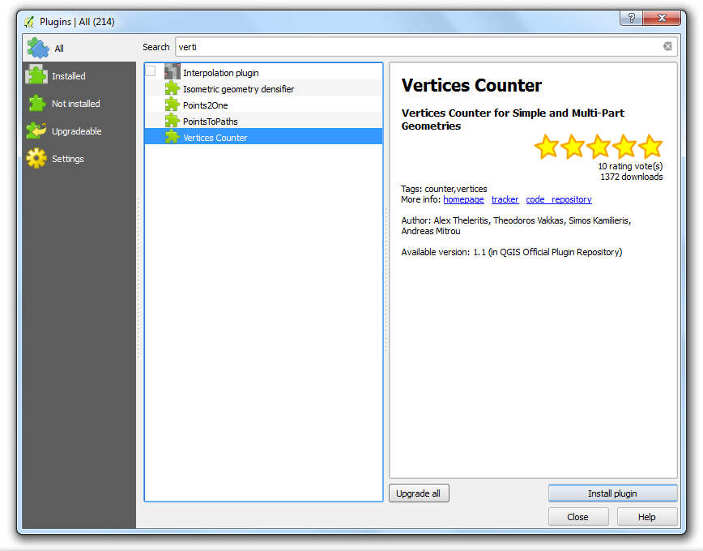
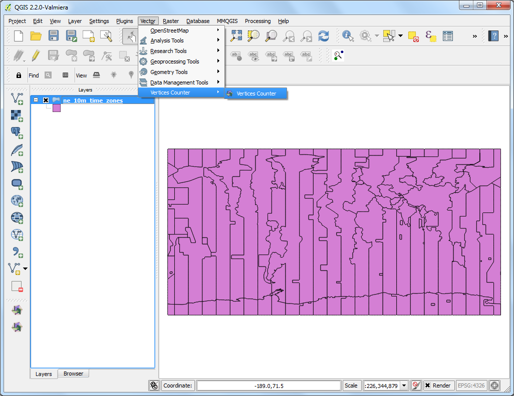
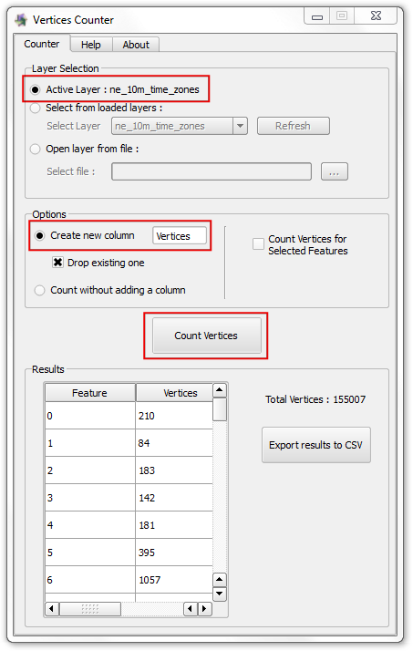
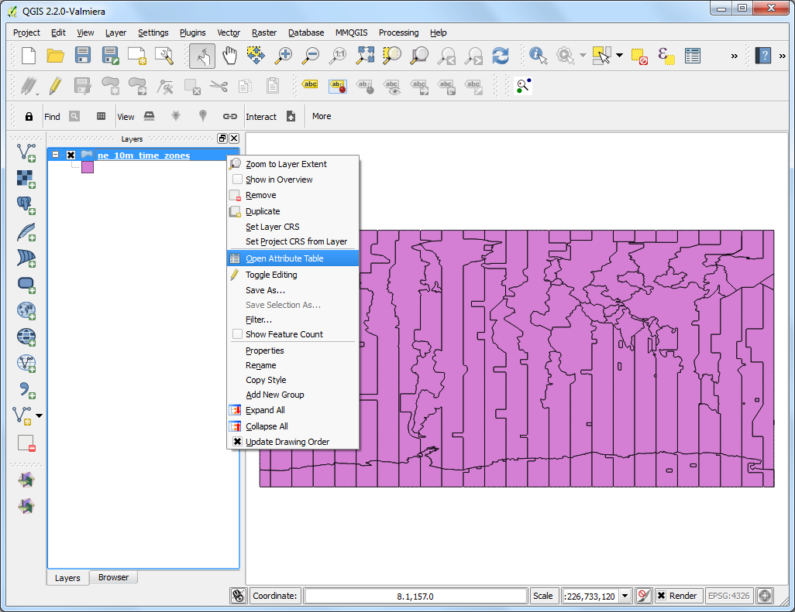
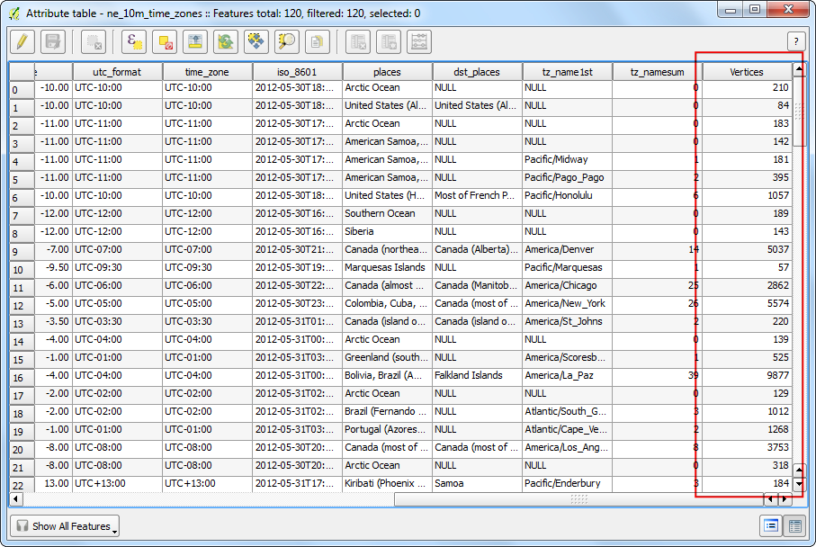

Đếm số lượng nút trong một lớp
[ Download PDF A4 Letter ]
QGIS doesn’t have a built-in function to calculate number of vertices for each
feature in a layer. But a very handy plugin called Vertices Counter fills
this gap and adds a few handy features as well.
Các bước thực hiện
- Find and install the Vertices Counter plugin. See Using Plugins
for details on installing plugins in QGIS.

- Load any polygon or line layer in QGIS. Go to .

- By default, the active layer will be selected under the Layer
Selection. You may select any other loaded layers or open layer directly
from disk as well. The plugin has an option called Create new
column which can add an number of vertices as an attribute for each
feature. This is handy for a lot of use cases, so we can select that option.
Now click on the Count Vertices button and the
Results section will be populated with vertex count for each
feature. You can even see the Total Vertices displayed on the
side.

- Back in the main QGIS window, let’s verify if a new column was added to our
layer. Right-click the layer and select Open Attribute Table.

- As you will notice, a column named Vertices will be added at the end with
values representing the vertex count for each feature. This column can come
in handy if you want to do a query such as Select all features with Vertices
> X.
